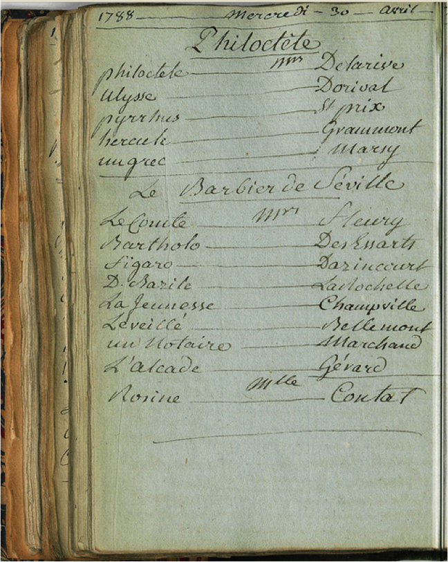
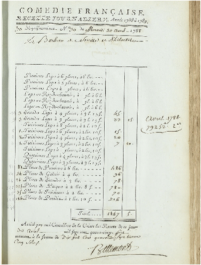

L’alternance dans l’ordre des pièces a de quoi surprendre et amène à se demander si cela correspond à une pratique avérée : la comédie pouvait-elle effectivement être jouée avant la tragédie ? En se reportant au registre des feux, il semblerait que la tragédie était bien jouée en premier, suivie de la comédie. Il n’en reste pas moins que l’évolution dans la tenue des registres met en évidence un glissement : à partir des années 1780, la comédie peut être mentionnée avant la tragédie, avec une fréquence qui empêche de mettre cela uniquement sur le compte de l’erreur d’un secrétaire peu attentif. Si ces indications ne renvoient donc pas à l’ordre dans lequel les pièces se suivent sur la scène, elles suggèrent bien que la hiérarchie entre les genres est en train de changer dans les mentalités.
